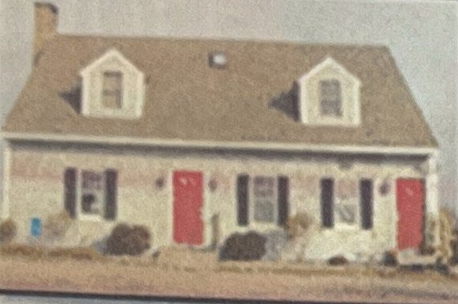
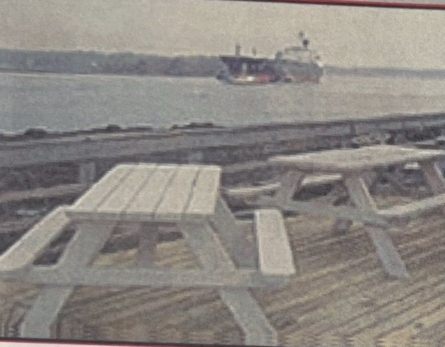

Clubhouse
Facilities


Kittery Point Yacht Club is located in New Castle, NH, on the southern shore of the Piscataqua River. Its clubhouse, on Goat Island, stands opposite Seavey Island, home of the historic Portsmouth Naval Shipyard. Ships from all over the world pass before it, vying with local lobster and fishing boats during the week and hundreds of pleasure boats on holidays and weekends. The clubhouse has a wrap-around deck, a kitchen and bar, and one shower. It is not wheelchair accessible; there are two broad steps up to the deck. Per the occupancy permit, the limit is 70 persons in the club at any one time.
A member of US Sailing, KPYC is well represented in local, regional and occasionally national events, with members racing and cruising a variety of boats. The club sponsors the KPYC Sailing School, the Seacoast's only public sailing school and youth racing program. Members are drawn mainly from New Hampshire and Maine, and most enjoy boating and organized social activities during the main season from May to October, with potluck dinners and casual gatherings through the year.
Clubhouse rules
- The Clubhouse is for the exclusive use of members and invited guests.
- There shall be no social activity conducted on club property east of the building.
- No pets allowed on the premises except going to and from a boat. All pets must be on a leash. Members must clean up after their animals.
- There shall be no borrowing or renting of Club property.
- No child under 18 may be allowed the use of the Clubhouse unless accompanied by a member or parent responsible for his or her supervision.
- Members shall be held responsible for any property damaged or lost by themselves or their guests.
- Guests, other than visiting yachtsmen, must be accompanied by a member and that member shall be held responsible for the conduct of the guest while on the premises. Guests of members may be taken to a member's boat by the launch only when the member is already on board.
- The last member to leave the Clubhouse is responsible for locking doors and windows, turning out lights, and turning down the heat.
- The Clubhouse is available for member use and shall be left "shipshape" after each use, especially the bar and galley.
- Application by a member for rental of the Club for a private event shall be made to the Social Committee on the form provided. The Club will not be rented from May 1 to October 15.
- The member holding a private party at the Club shall be present at all times and shall be responsible for proper conduct of guests and all damage or loss to the Club. Out of respect for our tenant, noise levels are restricted to conversational tones after 10:00 PM, with no noise after 11:00 PM. Clean-up following rentals must begin no earlier than 8:00 AM on the day following the event and be completed no later than 10:00 AM.
- Visiting yachtsmen from other yacht clubs may be allowed use of the club facilities during normal club hours (Steward or dock attendant on duty).
- Tie-up on the dock is limited to pick up, drop off, and provisioning only. In case of an emergency, or if there is a need to use the dock for an extended period, call the House Committee Chair.
- Only Club members and Sailing School students will be allowed to park on the premises on Tuesday nights. Guests are to park on the road or elsewhere. This policy is in effect from Docks In to Docks Out.
- The Club facility will be locked when no members are present and when the Steward is not on the premises.
- Sailing School students will be monitored by the instructors, who will enforce the house rules.
- Neither profanity nor other offensive behavior will be tolerated; a member's suspension or expulsion could result.
- There shall be no smoking in the Clubhouse.
Clubhouse rentals
Club members may rent the Club for private functions on a first come, first served basis after October 15 and before May 1. No rentals are permitted from May 1 through October 15. Any member who rents the Club must be present at the event, and the rental and deposit checks must be written by the member, not by someone they are sponsoring. Members must reserve the Club if they want exclusive use of the Clubhouse or plan to decorate it; an event that involves decorating and inviting people is a "party" under Board policy and is subject to the rental policy. The Club may not be used for commercial purposes.
Clubhouse calendar, fall and winter 2026
The club will not have an online calendar until the new website launches. Dates already booked or scheduled are listed here and on the clubhouse bulletin board; check with the House Chair before requesting a date.
| Date | Type | Details |
|---|---|---|
| Fri Oct 2 | Club event | Oktoberfest Pub Night, 5:00 PM to 9:00 PM, $20 per person |
| Thu Oct 15 | Reserved | Reserved: private member event |
| Sat Oct 17 | Club event | Docks Out work day, 8:00 AM to noon |
| Thu Oct 22 | Club event | October semiannual membership meeting: Director elections, trophies, sailing school vote |
| Fri Oct 30 | Reserved | Reserved: private event (pending) |
| Sun Nov 8 or Mon Nov 9 | Reserved | Reserved: private member event (date to be confirmed) |
| Sat Nov 14 | Club event | Club event, details to be announced |
| Fri Nov 20 | Reserved | Reserved: private member event |
| Sun Nov 29 | Reserved | Reserved: private member event |
| Sat Dec 5 | Club event | NEI (Dylan Kimmel), private event |
| Sat Dec 12 | Club event | KPYC Christmas Party |
| Fri Jan 1 | Club event | KPYC New Year's Day Bloody Mary Party |
How to reserve
- Check the calendar on the clubhouse wall for your date, then email the House Chair with your name, phone, requested date, start and end times, and expected number of guests.
- Sign the Release and Hold Harmless Agreement and agree to pay for any damage to the club.
- Pay the rental fee and provide the deposit check. Once confirmed, your reservation is posted on the clubhouse calendar.
- During the event, post a sign on the front door: "Private Member Event Underway". The club's beverage refrigerator is not available during rentals.
- To cancel, notify the House Chair immediately; payments are refunded and the date is released.
Rental rules
Our cleaning person tries to schedule the weekly cleaning the day before your rental, but has no control over what happens between the cleaning and your arrival. Chairs and tables are behind the roll-out cabinet in the kitchen in a labeled stacking order; the one long table stays out in the rear right-hand corner. If your function runs into the evening, light the parking lot from the four floodlight switches on the kitchen wall. Noise is restricted to conversational tones after 10:00 PM and there is to be no noise after 11:00 PM.
It is your responsibility to leave the Clubhouse shipshape. All rentals must, at the end of the function:
- Wet mop (warm water only) the kitchen, bathrooms and hardwood floors, and vacuum the carpets.
- Clean bathroom toilets and sinks.
- Wash, dry and put away any pots, pans, dishes or utensils used; wipe down the bar and kitchen counters.
- Take out all trash (kitchen and bathrooms) and replace with clean bags; bag recyclable cans beside the dumpster.
- Check that all doors and windows are locked, no burners or oven elements are on, lights are out including the floodlights, and the heat is turned down.
If clean-up is deferred to the following day, it must start no earlier than 8:00 AM and finish by 10:00 AM. If additional cleaning is needed, the deposit may be used to pay for it.